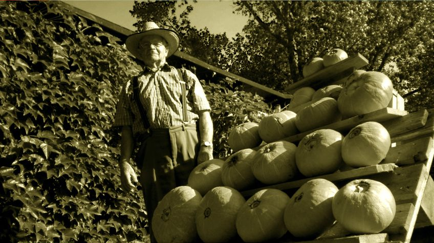
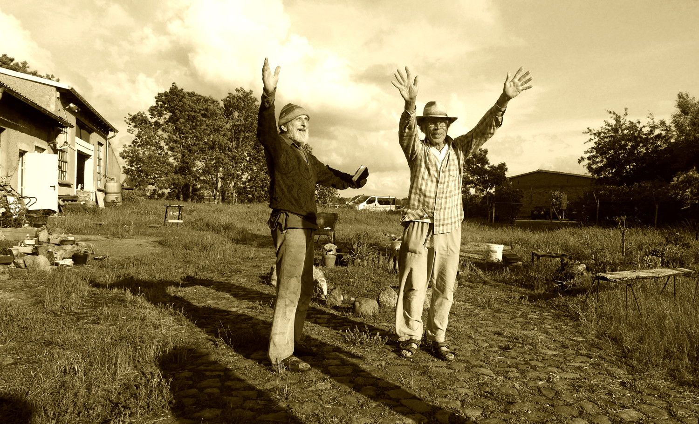
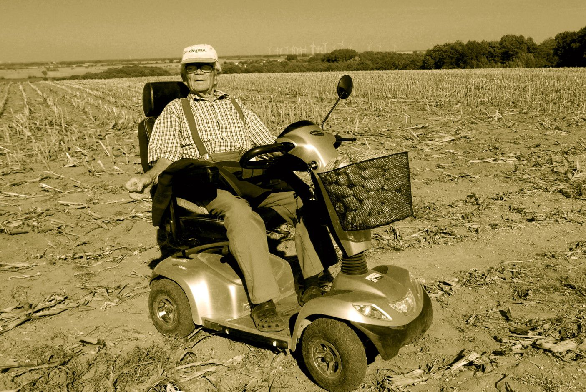
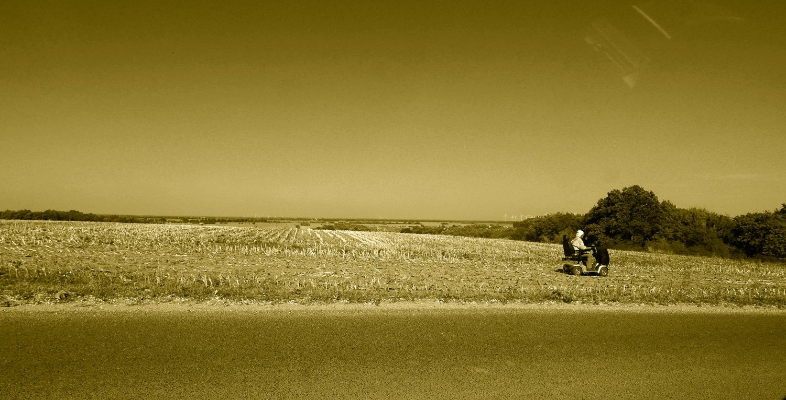

Bewohner Freunde Gäste

Herr Jetz aus Buchholz freut sich über die reiche Kürbisernte in diesem Jahr. Die fleißige Gartenarbeit zusammen mit seiner Frau wurde von der Natur belohnt. Diese verschiedenfarbigen Beerenfrüchte, von denen es rund 750 Arten gibt, die zum Teil bis zu 100 kg schwer werden können, standen schon vor 8000 Jahren in Süd- und Mittelamerika auf dem Speisezettel von Menschen. Man kann sie kochen, backen, braten, zu Kompott und Marmelade verarbeiten oder als Zierde einfach anschauen. Einige werden auch für Halloween geopfert. Sie sind gesund, vitaminreich, kalorienarm und bei richtiger Lagerung ein lange haltbares Wintergemüse.
Tollensetaler Stimme 2009/09 /Agrarwirtschaft, S. 5


